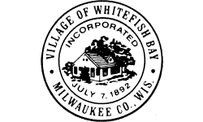
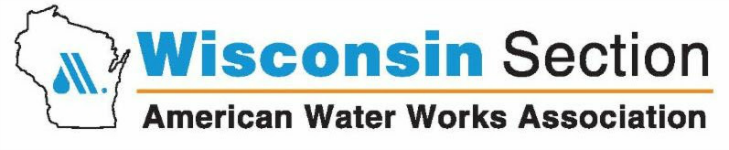

Click here to download PDF version
2016 Annual Water Quality Report
The North Shore Water Commission, in cooperation with its member utilities, publishes a water quality report annually. The report is designed so you can clearly understand what’s in your drinking water and how to obtain additional information. Thank you for being a valued customer!
North Shore Water Commission
The North Shore Water Commission (NSWC) operates and maintains the Water Filtration Plant at 400 West Bender Road in Glendale as well as the Raw Water Pumping Station located in Whitefish Bay. The NSWC is responsible for purifying and pumping potable water to its member utilities which include Fox Point, Glendale, and Whitefish Bay. In addition, water is also provided to some areas served by Mequon Water Utility via a wholesale water agreement. If you want to know more about water quality or this report, please contact the Plant Manager at (414) 963-0160 or at ekiefer@northshorewc.com.
Water Utilities
Each water utility is responsible for connecting customers to the water system, metering water use, billing, and responding to distribution problems such as main breaks. You can find out who your water utility is by checking your water bill. If you experience a water-related problem or have questions about your water bill, please contact your water utility for assistance.
| Fox Point Water Utility | Glendale Water Utility | Whitefish Bay Water Utility |
|---|---|---|
|  | ||
| (414) 351-8900 | (414) 228-1719 | (414) 962-6690 |
Governance
Fox Point, Glendale, and Whitefish Bay jointly own the facilities of the North Shore Water Commission and share the costs of water production and facility improvements.
The NSWC is governed by three appointed Commissioners and three Alternates with equal representation from Fox Point, Glendale, and Whitefish Bay. Each member is appointed by his/her respective municipality for a term of one year. Annually, the responsibilities of Chairman, Secretary and Member are rotated giving each community equal share of authority.
Under normal circumstances, the NSWC convenes monthly and reviews the operation and maintenance of the water treatment facility as well as water quality concerns. After discussion, the NSWC votes on proposed action, spending, and budgets. Capital improvements, such as the UV disinfection upgrade, must be unanimously approved and financed by the member communities.
Public Meetings
Regular meetings are usually held on the 2nd Wednesday of the month at 8:00 AM in the conference room located at 400 West Bender Road, Glendale. The public is welcome to attend any of our meetings. Please note that they may be held at different times or locations. You can view the agenda at http://northshorewater.org/index.php/meetings to find out more information about past or upcoming meetings. The agenda is typically posted 3 to 5 days prior to a meeting.
More Information About Us
For additional information about water quality on the internet, please visit WDNR’s website at http://dnr.wi.gov/topic/DrinkingWater, the EPA’s web site at http://www.epa.gov/safewater, or our web site at http://www.northshorewater.org. For more information about our member communities visit: http://www.villageoffoxpoint.com, http://www.glendale-wi.org, and http://www.wfbvillage.org.
Abbreviations and Definitions
| Term | Abbreviation | Definition |
|---|---|---|
| Action Level | AL | The concentration of a contaminant which, if exceeded, triggers treatment or other requirements which a water system must follow. |
| Disinfection By-products | DBPs | These are compounds that are formed when using a disinfectant. |
| EPA | The United States Environmental Protection Agency | |
| Haloacetic Acids | HAA5 | Monochloroacetic acid, dichloroacetic acid, trichloroacetic acid, monobromoacetic acid, and dibromoacetic acid. This is a class of disinfection by-products. |
| Locational Running Annual Average | LRAA | The average of four quarterly samples collected in one 12-month period at a specific sampling site. |
| Maximum Contaminant Level | MCL | This is the highest level of a contaminant that is allowed in drinking water. MCLs are set as close to the MCLGs as feasible using the best available treatment technology. |
| Maximum Contaminant Level Goal | MCLG | This is the level of a contaminant in drinking water below which there is no known or expected risk to health. MCLGs allow for a margin of safety. |
| Milligrams Per Liter | mg/L | One milligram per liter corresponds to one minute in two years or a single penny in $10,000. Milligrams per liter is equivalent to the term parts per million (ppm). |
| Micrograms Per Liter | ug/l | One part per billion corresponds to one minute in 2,000 years, or a single penny in $10,000,000. Micrograms per liter is equivalent to the term parts per billion (ppb). |
| Nephelometric Turbidity Unit | NTU | Nephelometric turbidity unit is a measure of the clarity of water. Turbidity in excess of 5 NTU is just noticeable to the average person. |
| NSWC | North Shore Water Commission | |
| Not Applicable | NA | Not applicable. |
| Not Detected | ND | Laboratory analysis indicates that the constituent is not present. In other words, the analyte was below the detection limit. |
| Trihalomethanes | TTHM | Chloroform, bromodichloromethane, dibromochloromethane, and bromoform. This is a class of disinfection by-products. |
| WDNR | Wisconsin Department of Natural Resources |
Cryptosporidium Monitoring
Cryptosporidium is a microscopic protozoan that, when ingested, can result in diarrhea, fever, and other gastrointestinal symptoms. The organism is found in many surface water sources (lakes, rivers, streams) and comes from human and animal wastes in the watershed. The NSWC uses an effective treatment process that is designed to remove and inactivate this pathogen.
Cryptosporidium is being monitored in the raw water in compliance with the Long Term 2 Enhanced Surface Water Treatment Rule. In 2016, no cryptosporidium was detected.
Turbidity
In accordance with s. NR 810.29, Wisconsin Administrative Code, the treated surface water is monitored for turbidity to confirm that the filtered water is less than 0.30 NTU. Turbidity is a measure of the cloudiness of water. We monitor for turbidity because it is a good indicator of the effectiveness of our filtration system. During the year, the highest single entry point turbidity measurement was 0.15 NTU. The lowest monthly percentage of samples meeting the turbidity limits was 100 percent.
Regulatory Compliance
We are proud to report that our system has not violated a maximum contaminant level or any other water quality standard. The following tables list the contaminants that were detected. This report may contain up to five years worth of water quality results. If tested annually, or more frequently, the results from the most recent year are shown on this report. If testing is done less frequently, the results are shown from the most recent testing event. The NSWC and its member water utilities are allowed to test for some contaminants less frequently than once per year.
Please note that the term "level found" is used throughout this report. The meaning of "level found" will vary depending on how many samples were collected in a year and the particular regulation it pertains to. If a contaminant was tested once in a year, a single value will be reported as "level found." If contaminant was tested more than one time during the year, the minimum and maximum values (range) will be reported below the level found in parentheses.
Monitoring Results Pertaining to the North Shore Water Commission
The NSWC and its member utilities work together to ensure the water it delivers meets or exceeds all standards set forth by its regulatory agencies. The following sections show the contaminants that were detected by the NSWC in its monitoring. Please note that we did not test for radon during 2016 because we were not required to.
Inorganic
| Substance | MCLG | MCL | Level Found | Status | Sources of Contamination |
|---|---|---|---|---|---|
| Antimony | 6 ug/L | 6 ug/L | 0.18 ug/L | Discharge from petroleum refineries; fire retardants; ceramics; electronics; solder | |
| Barium | 2 mg/L | 2 mg/L | 0.019 mg/L | Discharge of drilling wastes; discharge from metal refineries; erosion of natural deposits | |
| Cyanide (4/21/2014) | 200 ug/L | 200 ug/L | 10 ug/L | Discharge from steel/metal factories; discharge from plastic and fertilizer factories | |
| 1 Fluoride | 4 mg/L | 4 mg/L | 0.80 mg/L (0.71 - 0.93) | Erosion of natural deposits; Water additive which promotes strong teeth; discharge from fertilizer and aluminum factories | |
| Nickel | 100 ug/L | 100 ug/L | 1.2 ug/L | Nickel occurs naturally in soils, groundwater and surface waters and is often used in electroplating, stainless steel and alloy products | |
| Nitrate (NO3-N) | 10 mg/L | 10 mg/L | 0.49 mg/L | Runoff from fertilizer use; Leaching from septic tanks, sewage; erosion of natural deposits | |
| Sodium | NA | NA | 14 mg/L | NA |
Lead and Copper
The NSWC is responsible for lead and copper monitoring. To comply with this regulation, the NSWC works with its member water utilities and the WDNR to determine where and how samples are collected. The monitoring results listed in this section are from water samples collected in homes that have a lead service or copper plumbing with lead soldered joints in Fox Point, Glendale, and Whitefish Bay.
Please note that lead and copper do not have a maximum contaminant level. Instead they have an action level (AL). To determine compliance with the Lead and Copper Rule, all results collected from monitoring event are arranged lowest to highest and the 290th percentile value is determined. If the 90th percentile value is at or below the AL, no additional action is required.
Please note that "level found" in this section is the 90th percentile value from the latest monitoring event. Of the 30 samples collected, none of them exceeded the action level.
| Substance | MCLG | AL | Level Found | Status | Sources of Contamination |
|---|---|---|---|---|---|
| Copper (2015) | 1.3 mg/L | 1.3 mg/L | 0.048 mg/L (0.0034 mg/L to 0.110 mg/L) | Corrosion of household plumbing systems; erosion of natural deposits; leach from wood preservatives | |
| Lead (2015) | 0 | 15 ug/L | 9.1 ug/L (ND to 15 ug/L) | Corrosion of household plumbing systems; erosion of natural deposits. |
Unregulated Contaminants
| Substance | MCLG | MCL | Level Found | Status | Sources of Contamination |
|---|---|---|---|---|---|
| Sulfate | NA | NA | 28 mg/L | NA |
Other Monitoring Results
The NSWC was required to monitor for disinfection by-products in the past. Due to a change in monitoring responsibilities, these contaminants are now monitored by each member utility.
Disinfection By-Products
| Substance | MCLG | MCL | Level Found | Status | Sources of Contamination |
|---|---|---|---|---|---|
| HAA5 (9/17/2013) | 60 ug/L | 60 ug/L | 12.7 ug/L (6.5 - 12.7) | By-product of drinking water chlorination | |
| TTHM (9/17/2013) | 0 | 80 ug/L | 25.2 ug/L (11.9 - 25.2) | By-product of drinking water chlorination |
3 Unregulated Volatile Organic Carbons
| Substance | MCLG | MCL | Level Found | Status | Sources of Contamination |
|---|---|---|---|---|---|
| Bromodichloro- methane (2014) | NA | NA | 6.2 ug/L | By-product of drinking water chlorination | |
| Bromoform (2014) | NA | NA | 0.4 ug/L | By-product of drinking water chlorination | |
| Chloroform (2014) | NA | NA | 5.1 ug/L | By-product of drinking water chlorination | |
| Dibromochloro- methane (2014) | NA | NA | 3.8 ug/L | By-product of drinking water chlorination |
Monitoring Results Pertaining to the Village of Fox Point
The following table show the contaminants that were detected by the Village of Fox Point in its monitoring.
Disinfection By-Products
For monitoring location SSS-9:
| Substance | MCLG | MCL | Level Found | Status | Sources of Contamination |
|---|---|---|---|---|---|
| HAA5 | 60 ug/L | 60 ug/L | 16.4 ug/L | By-product of drinking water chlorination | |
| TTHM | 0 | 80 ug/L | 17.9 ug/L | By-product of drinking water chlorination |
For monitoring location SSS-10:
| Substance | MCLG | MCL | Level Found | Status | Sources of Contamination |
|---|---|---|---|---|---|
| HAA5 | 60 ug/L | 60 ug/L | 16.4 ug/L | By-product of drinking water chlorination | |
| TTHM | 0 | 80 ug/L | 20.2 ug/L | By-product of drinking water chlorination |
Monitoring Results Pertaining to the City of Glendale
The following table show the contaminants that were detected by the City of Glendale in its monitoring.
Disinfection By-Products
Please note that "level found" in this section is the LRAA. This value can include data from a previous year.
For monitoring location SSS-03:
| Substance | MCLG | MCL | Level Found | Status | Sources of Contamination |
|---|---|---|---|---|---|
| HAA5 | 60 ug/L | 60 ug/L | 9.8 ug/L (8.4 - 12.0) | By-product of drinking water chlorination | |
| TTHM | 0 | 80 ug/L | 14.7 ug/L (9.2 - 17.9) | By-product of drinking water chlorination |
For monitoring location SSS-16:
| Substance | MCLG | MCL | Level Found | Status | Sources of Contamination |
|---|---|---|---|---|---|
| HAA5 | 60 ug/L | 60 ug/L | 9.4 ug/L (4.9 - 13.2) | By-product of drinking water chlorination | |
| TTHM | 0 | 80 ug/L | 17.3 ug/L (9.9 - 22.5) | By-product of drinking water chlorination |
Unregulated Contaminant Monitoring Rule
EPA periodically requires water systems to test for unregulated contaminants to better understand their occurrence in drinking water. These compounds are not regulated, and therefore, have no additional reporting and/or treatment requirements. Glendale was selected by EPA to conduct this testing in 2013.
Please note that "level found" is the average level during the calendar year.
| Substance | MCLG | MCL | Level Found | Status | Sources of Contamination |
|---|---|---|---|---|---|
| Chlorate (2013) | NA | NA | 123 ug/L (68.0 - 226) | Agricultural defoliant or desiccant; disinfection by-product; used in chlorine dioxide production | |
| Chromium-Total (2013) | 100 ug/L | 100 ug/L | 0.37 ug/L (0.24 - 0.46) | Sum of chromium in all valence states See chromium-6 for more information. | |
| Chromium-6 (2013) | NA | NA | 0.18 ug/L (0.10 - 0.24) | Naturally-occurring element; used in making steel and other alloys; chromium-3 and -6 forms are used for chrome plating, dyes and pigments, leather tanning, and wood preservation | |
| Molybdenum (2013) | NA | NA | 0.14 ug/L (ND - 1.1) | Naturally-occurring metal found in small amounts in soil and rock. It can also be found in groundwater, either naturally or as the result of industrial activities | |
| Strontium (2013) | NA | NA | 118 ug/L (113 - 127) | Naturally-occurring element; historically, commercial use has been in the faceplate of cathode ray tubes | |
| Vanadium (2013) | NA | NA | 0.23 ug/L (ND - 0.30) | Naturally-occurring metal; used as vanadium pentoxide which is a chemical intermediate and catalyst |
The following is a complete list of compounds that were tested under this regulation:
1,2,3-trichloropropane, 1,1-dichloroethane, 1,3-butadiene, 1,4-dioxane, bromochloromethane (Halon 1011), bromomethane, chlorate, chlorodifluoromethane (HCFC-22), chloromethane, chromium, chromium-6, cobalt, molybdenum, perfluorobutanesulfonic acid (PFBS), perfluoroctanoic acid (PFOA), perfluoroheptanoic acid (PFHpA), perfluorohexanesulfonic acid (PFHxS), perfluorononanoic acid (PFNA), perfluorooctanesulfonic acid (PFOS), strontium, vanadium
Monitoring Results Pertaining to the Village of Whitefish Bay
The following table lists the contaminants that were detected by the Village of Whitefish Bay in its monitoring.
Disinfection By-Products
Please note that "level found" in this section is the LRAA. This value can include data from a previous year.
For monitoring location SSS-01:
| Substance | MCLG | MCL | Level Found | Status | Sources of Contamination |
|---|---|---|---|---|---|
| HAA5 | 60 ug/L | 60 ug/L | 8.8 ug/L (6.8 - 11.3) | By-product of drinking water chlorination | |
| TTHM | 0 | 80 ug/L | 14.4 ug/L (10.8 - 16.9) | By-product of drinking water chlorination |
For monitoring location SSS-02:
| Substance | MCLG | MCL | Level Found | Status | Sources of Contamination |
|---|---|---|---|---|---|
| HAA5 | 60 ug/L | 60 ug/L | 8.4 ug/L (6.0 - 11.4) | By-product of drinking water chlorination | |
| TTHM | 0 | 80 ug/L | 15.5 ug/L (9.6 - 20.1) | By-product of drinking water chlorination |
Unregulated Contaminant Monitoring Rule
EPA periodically requires water systems to test for unregulated contaminants to better understand their occurrence in drinking water. These compounds are not regulated, and therefore, have no additional reporting and/or treatment requirements. Whitefish Bay was selected to do this monitoring from the summer of 2014 to Spring of 2015.
Please note that "level found" is the average level during the calendar year.
| Substance | MCLG | MCL | Level Found | Status | Sources of Contamination |
|---|---|---|---|---|---|
| Chlorate (2015) | NA | NA | 84.6 ug/L (81.6 - 86.7) | Agricultural defoliant or desiccant; disinfection by-product; used in chlorine dioxide production | |
| Chromium-Total (2015) | 100 ug/L | 100 ug/L | 0.37 ug/L (0.30 - 0.46) | Sum of chromium in all valence states See chromium-6 for more information. | |
| Chromium-6 (2015) | NA | NA | 0.19 ug/L (0.15 - 0.22) | Naturally-occurring element; used in making steel and other alloys; chromium-3 and -6 forms are used for chrome plating, dyes and pigments, leather tanning, and wood preservation | |
| Molybdenum (2015) | NA | NA | 0.28 ug/L (ND - 1.1) | Naturally-occurring metal found in small amounts in soil and rock. It can also be found in groundwater, either naturally or as the result of industrial activities | |
| Strontium (2015) | NA | NA | 125 ug/L (121 - 128) | Naturally-occurring element; historically, commercial use has been in the faceplate of cathode ray tubes | |
| Vanadium (2015) | NA | NA | 0.12 ug/L (ND - 0.24) | Naturally-occurring metal; used as vanadium pentoxide which is a chemical intermediate and catalyst |
The following is a complete list of compounds that were tested under this regulation:
1,2,3-trichloropropane, 1,1-dichloroethane, 1,3-butadiene, 1,4-dioxane, bromochloromethane (Halon 1011), bromomethane, chlorate, chlorodifluoromethane (HCFC-22), chloromethane, chromium, chromium-6, cobalt, molybdenum, perfluorobutanesulfonic acid (PFBS), perfluoroctanoic acid (PFOA), perfluoroheptanoic acid (PFHpA), perfluorohexanesulfonic acid (PFHxS), perfluorononanoic acid (PFNA), perfluorooctanesulfonic acid (PFOS), strontium, vanadium
Source Water Assessment
The North Shore Water Commission purifies water from Lake Michigan. The latest evaluation by the Wisconsin Department of Natural Resources (WDNR) indicates our source water quality is susceptible to pollution and contaminants. Preserving the water quality of Lake Michigan is essential to maintaining your drinking water quality. For more information on the impacts to your source of drinking water, see the Source Water Assessment for North Shore Water Commission at http://northshorewater.org/images/materials/SWA-2002.pdf.
Education Information
The sources of drinking water, both tap water and bottled water, include rivers, lakes, streams, ponds, reservoirs, springs and wells. As water travels over the surface of the land or through the ground, it dissolves naturally occurring minerals and, in some cases, radioactive material, and can pick up substances resulting from the presence of animals or from human activity. Contaminants that may be present in source water include the following.
Microbial contaminants, such as viruses and bacteria, which may come from sewage treatment plants, septic systems, agricultural livestock operations and wildlife.
Inorganic contaminants, such as salts and metals, which can be naturally-occurring or result from urban stormwater runoff, industrial or domestic wastewater discharges, oil and gas production, mining or farming.
Pesticides and herbicides, which may come from a variety of sources such as agriculture, urban stormwater runoff and residential uses.
Organic chemical contaminants, including synthetic and volatile organic chemicals, which are by-products of industrial processes and petroleum production, and can also come from gas stations, urban stormwater runoff and septic systems.
Radioactive contaminants, which can be naturally occurring or be the result of oil and gas production and mining activities.
In order to ensure that tap water is safe to drink, EPA prescribes regulations that limit the amount of certain contaminants in water provided by public water systems. Food and Drug Administration regulations establish limits for contaminants in bottled water, which should provide the same protection for public health.
Health Information
Drinking water, including bottled water, may reasonably be expected to contain at least small amounts of some contaminants. The presence of contaminants does not necessarily indicate that water poses a health risk. More information about contaminants and potential health effects can be obtained by calling the Environmental Protection Agency’s safe drinking water hotline at (800) 426-4791. Some people may be more vulnerable to contaminants in drinking water than the general population. Immuno-compromised persons such as persons with cancer undergoing chemotherapy, persons who have undergone organ transplants, people with HIV/AIDS or other immune systems disorders, some elderly, and infants can be particularly at risk from infections. These people should seek advice about drinking water from their health care providers. EPA/CDC guidelines on appropriate means to lessen the risk of infection by cryptosporidium and other microbial contaminants are available from the Environmental Protection Agency’s safe drinking water hotline.
Lead Information
If present, elevated levels of lead can cause serious health problems, especially for pregnant women and young children. Lead in drinking water is primarily from materials and components associated with service lines and home plumbing. North Shore Water Commission is responsible for providing high quality drinking water, but cannot control the variety of materials used in plumbing components. When your water has been sitting for several hours, you can minimize the potential for lead exposure by flushing your tap for 3 minutes before using water for drinking or cooking. If you are concerned about lead in your water, you may wish to have your water tested. Information on lead in drinking water, testing methods, and steps you can take to minimize exposure is available from the Safe Drinking Water Hotline or at http://www.epa.gov/safewater/lead.
The North Shore Health Department is another valuable resource. They can provide you with more information about the health effects of lead and how to test for lead in your home. Visit their website at http://www.nshealthdept.org or call (414) 371-2980.
Treatment Process
The Bender Water Filtration Plant is a conventional water treatment facility that starts with an intake in Lake Michigan. Water enters our intake crib which is protected with bar screens and a mussel control system.
Water travelling through the intake passes a traveling screen upon arriving at the Klode Park Station. Gravity forces the water to fill a large shorewell that has several raw water pumps submersed in it. Lake water is pumped from this station to the Bender treatment plant which is nearly a mile away in Glendale.
Upon arriving at the Bender treatment plant, aluminum sulfate (alum) and polymer are added to promote settling of solids. This water then travels very slowly through a system of rectangular basins that provide a location for particulate matter to accumulate.
Rapid sand filters remove the remaining particulate matter and clean water is stored in a clearwell below the filters. There are intermediate pumps (sometimes referred to as transfer or low lift pumps) which force the filtered water through our fully redundant ultraviolet (UV) disinfection system which inactivates pathogens such as cryptosporidium. Before going into the UV reactors, fluoride is added to prevent tooth decay. After the UV reactors, sodium hypochlorite (a form of chlorine) is used to disinfect any remaining pathogens.
Underground piping directs the water to our clearwells (historically they have been referred to as our "reservoirs"). While in the clearwells, water continues to react with chlorine so that proper disinfection is achieved.
Water is drawn out of the clearwells with our high service pumps. Underground piping directs the water to a chemical feed vault that allows for the addition of ammonium hydroxide (also referred to as aqua ammonia) and phosphate. The ammonium hydroxide converts the chlorine to another disinfectant, chloramine, that is used by neighboring communities and can reduce disinfection by-products. Phosphate is also added at this point to reduce lead and copper leaching within pipes and plumbing fixtures in your home.
The high service pumps deliver potable water to its members through metering pits located on the grounds of the Bender facility. There are several interconnections between members that the NSWC monitors; however, the bulk of the water stays within each member’s system after initial delivery.
Officials
Please note that officers from the member communities rotate positions annually at the May meeting.
Fox Point
| Office | Office Holder | Phone | |
|---|---|---|---|
| Secretary | Michael West | (414) 352-2712 | |
| Alternate | Scott Botcher | sbotcher@villageoffoxpoint.com | (414) 351-8900 |
Glendale
| Office | Office Holder | Phone | |
|---|---|---|---|
| Member | Dave Eastman | D.Eastman@glendale-wi.gov | (414) 228-1746 |
| Alternate | Rachel Reiss | R.Reiss@glendale-wi.gov | (414) 228-1703 |
| Fiscal Agent | Linda DiFrances | L.DiFrances@glendale-wi.gov | (414) 228-1701 |
Whitefish Bay
| Office | Office Holder | Phone | |
|---|---|---|---|
| Chairman | John Edlebeck | j.edlebeck@wfbvillage.org | (414) 962-6690 |
| Alternate | Paul Boening | p.boening@wfbvillage.org | (414) 962-6690 |
Staff
Eric Kiefer has been the Plant Manager since 2007. He received a Bachelor of Science degree with a major in chemistry from the University of Wisconsin Oshkosh as well as a Master of Business Administration degree from Marquette University. All full-time staff that participate in operations, including Mr. Kiefer, have a WDNR Municipal Waterworks Operator Certification. If you have a question regarding your water quality, please contact Mr. Kiefer at ekiefer@northshorewc.com or (414) 963-0160.
Associations
The NSWC is a proud member of the following associations:
| Association | |
|---|---|
| American Water Works Association | |
| Wisconsin Water Works Association |  |
| The Water Council | |
| Water Research Foundation | |
| West Shore Water Producers Association |